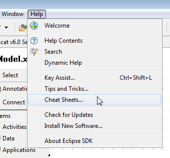
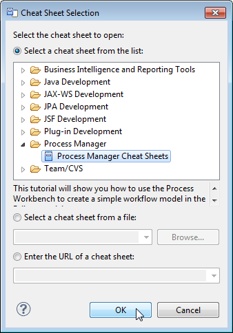
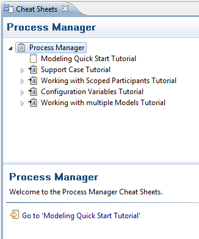
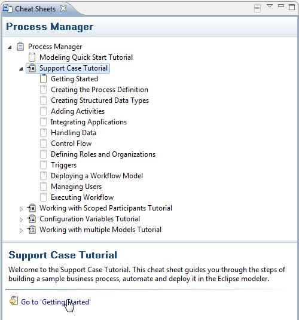

The Stardust Process Workbench provides you with cheat sheets as additional help to guide you through the steps of working with the workflow modeler.
The following cheat sheets for the development perspective are provided:
The Modeling Quick Start Tutorial cheat sheet guides you through the basic steps of building a workflow model with a process definition and its elements in the Process Development Perspective.
The Support Case Tutorial gives you a more detailed guidance through the steps of building of a sample business process and automate it in the development perspective. It refers to the tutorial of the Support Case Example.
The Working with Scoped Participants Tutorial cheat sheet guides you through the steps of creating and binding department structures. It refers to the Scoped Participants Tutorials.
The Configuration Variables Tutorial cheat sheet demonstrates how a workflow can be adjusted during runtime with the help of a configuration variable value. It refers to the tutorial for Using a Configuration Variable to Control a Process Flow.
The Working with Multiple Models Tutorial cheat sheet demonstrates how to create a provider model and a consumer model using some of its elements. It refers to the tutorial for Working with Multiple Models in One Audit Trail.
If you newly open the Process Development Perspective, the Process Manager Cheat Sheets view opens automatically.
To open the Process Manager Cheat Sheets view explicitly, perform the following steps:


Figure: Open the Cheat Sheets.
The Cheat Sheet view opens and you can choose the cheat sheet you want to work with:

Figure: Process Manager Cheat Sheets.
Now start with your cheat sheet, e.g. the Support Case Tutorial:

Figure: Start the Cheat Sheet.
For detailed information on how to work with cheat sheets please refer to the Workbench User Guide > Reference > User interface information > Help contents > Working with cheat sheets chapter of the Eclipse Help.